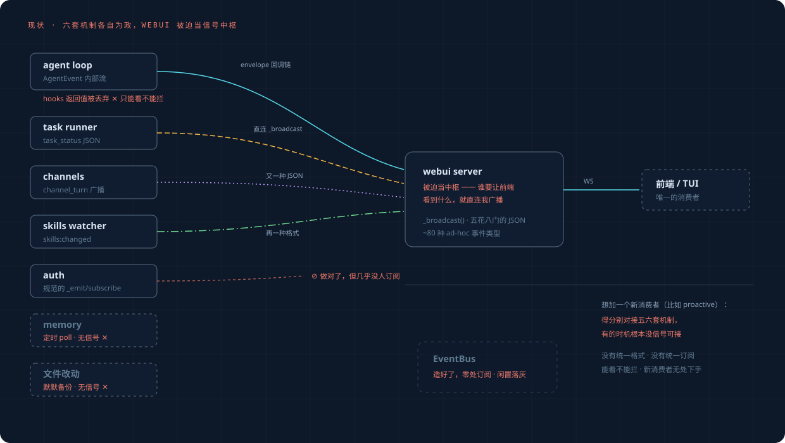

框架演进：现状 → 目标#
有了事件层（event-layer.md），整个框架怎么调整。三件事：现状什么样、目标什么样、怎么迁过去。
1. 现状：webui 被迫当信号中枢#

病根一句话：几乎所有信号存在的目的都是"让前端看到"，所以全部硬连到 webui server 的
_broadcast——task_status、channel_turn、skills:changed 各用各的 JSON 直连它；agent 事件经
dispatcher 回调链到它。webui 是个 UI 组件，却成了事实上的中枢。其余的更糟：auth 的事件做对了
但几乎没人订阅，memory 和文件改动根本无信号，hooks 返回值被丢弃（能看不能拦），EventBus 闲置。
结果：想加一个新消费者（proactive 就是第一个），得分别对接五六套机制，有的时机根本没信号可接。
2. 目标：总线当中枢，三个角色变化#

| 角色变化 | 谁 | 怎么变 |
|---|---|---|
| ↑ 上位 | EventBus | 从闲置死码升为唯一中枢（进程级单例，统一 Event 格式，按类型订阅） |
| ↓ 降级 | webui server | 从被迫的中枢降为普通订阅者：订阅总线 → 转发前端 WS |
| ＋ 进场 | proactive 及未来任何功能 | 只是又一个订阅者，一行 subscribe(types=…) 接入 |
外加一处新能力：tool.before 同步问询点——全框架唯一的拦截位（复用 _approval，对 subagent
生效）。其余一切交互都是异步观察。
3. 各子系统怎么变#
| 子系统 | 现在 | 将来 | 改动量 |
|---|---|---|---|
| agent loop | AgentEvent 内部流；hooks 返回值被丢 | 关键节点同时 emit 总线；tool.before 加同步问询 | 小 |
| dispatcher | on_event 回调链直达 webui | 保留（过渡期），另 emit user.prompt_submitted 等 |
小 |
| task runner | 直连 _broadcast task_status |
emit subagent.*；前端广播由 webui 订阅转发 |
小 |
| auth | 自己的 _emit/subscribe（规范） |
自身不动，一段桥接把 AuthEvent 翻成 Event emit 进总线 | 极小 |
| context | on_event 回调 | 回调里顺手 emit context.* |
极小 |
| channels | broadcast_channel_turn 直连 | emit channel.*；直连保留过渡 |
小 |
| memory | 定时 poll，无信号 | 处理起止 emit，把"定时"包装成事件 | 极小 |
| 文件改动 | 默默备份，无信号 | backup_for_current_turn 处 emit file.changed |
极小 |
| plugin hooks | observe-only，6 个 fire 点 | 内部统一走总线；hooks 保留为插件 API（包一层订阅）或逐步退役 | 决策点 |
| webui server | 中枢 | 订阅者；旧直连逐源退役 | 中 |
| EventBus | 闲置 | 升级（类型订阅 + 单例）并启用 | 核心 |
4. 怎么迁：新旧并行，逐源切换#
不大爆炸重写。总线先并行于现有路径跑起来，每一步独立可验证、可回退：
- ✅ 总线启用 + A 类源接入（已落地，2026-06-13）——纯增量，零行为变化，旧路径原样跑。
已验收：真实 turn 打出完整序列
user.prompt_submitted → model.response_started → tool.before → tool.after → turn.ended，metadata 自动带 session/turn。 - ✅ 补两个洞（已落地，2026-06-13）——
file.changed（write/edit/apply_patch 写成功后， live 验证）、tool.before同步问询点（tool_gate.py，端到端测试证明工具真不执行、 理由回给模型、bypass 关不掉）。 - ✅ B 类源桥接（已落地，2026-06-13）——auth 走真桥（
event_bridges.py，worker 启动装上）， context / channels / memory / webui watcher 源头直接 tap。skills.changed已 live 验证。 - ✅ webui 切换（已落地，2026-06-13）——5 个外部源（task runner / sub_agent / worktree /
functions watcher / channels）不再 import webui，改 emit
ws.frame事件；webui 订阅它原样 广播。帧 type/字段一字不变，前端零改动。webui 至此从信号中枢降级为总线订阅者。 live 验证：spawn_task 的 task_status 四态全经新链路到前端。 - ⏳ 新消费者进场——proactive 等，从此只面对总线。
第 1–3 步全是加法；第 4 步动旧路径，用透传信封（帧逐字不变）替代影子比对，前端无感切换。
5. 刻意不动的东西#
动什么和不动什么一样重要。这些不在本次演进范围：
- dispatcher 的七阶段 turn 编排、
process_user_turn的对外签名 - session git DAG 存储与 contextgit
- TaskRunner 的线程池模型
ApprovalRegistry批准机制（被复用，不被改写）- AuthStore 自身（桥接，不动它）
- 前端 WS 协议（webui 切换为订阅者后对前端透明）
具体接线点（file:line）与分步验证见 实施规划。 可视化版本：
framework-evolution.html。
最后更新 · 2026-06-13